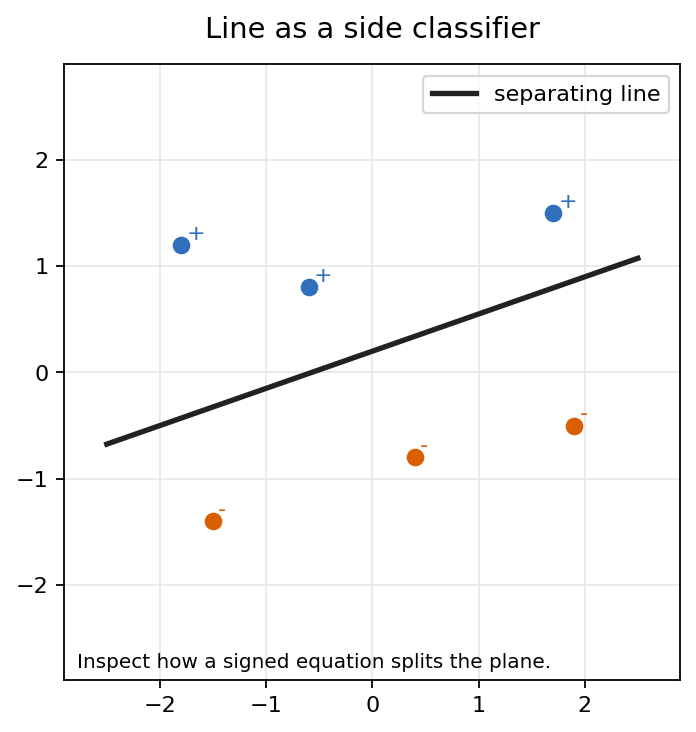
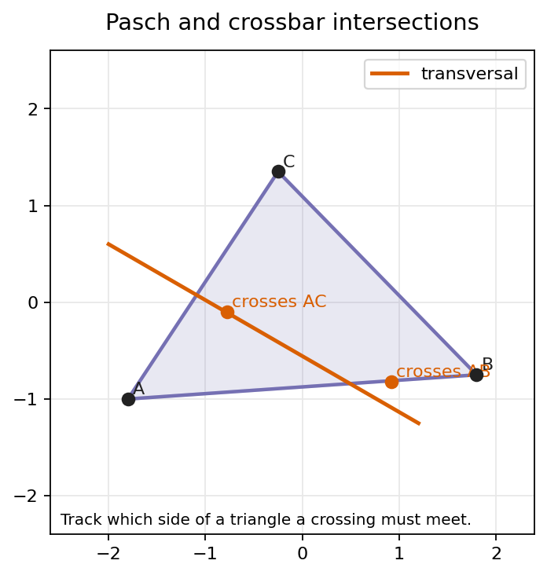
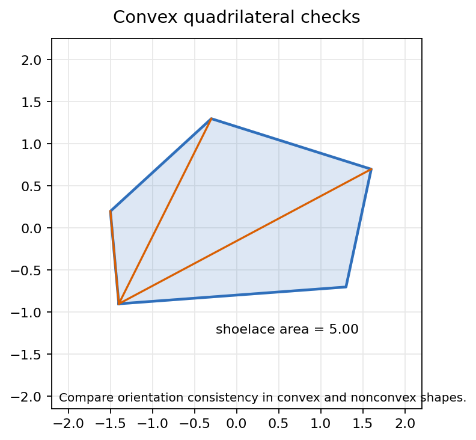
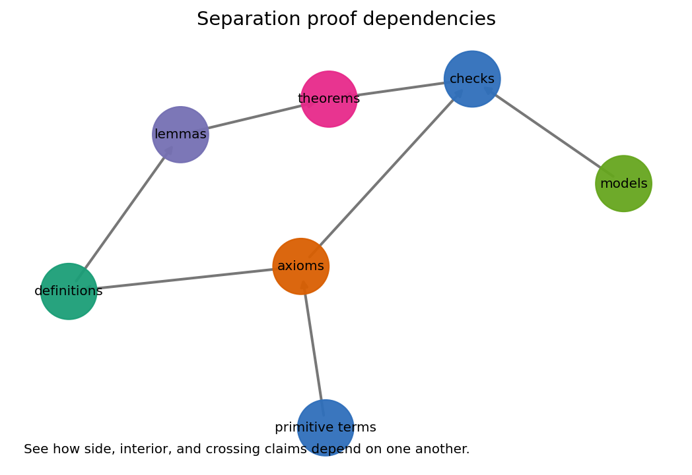

Plane Separation
Sides, crossings, interiors, Pasch geometry, the crossbar theorem, and convex quadrilateral tests.
Chapter Question
What does a line do to a plane once we care about sides, crossings, and interiors?
Line \(L\) gives predicates: side, meet, inside, convex.
From Separation To Convex Figures
The lecture follows the notebook sequence: define a side predicate, make crossing claims inspectable, then use those claims to control interiors and quadrilaterals.
Coordinates make the predicates computable with signs and oriented areas.
Pasch geometries abstract the same behavior without choosing coordinates.
Later existence theorems depend on reliable side bookkeeping.
A Line Becomes A Side Classifier
Definition 4.1-style Predicate
For a line \(L: ax+by+c=0\), define
\(s_L(P)=ax_P+by_P+c\)
Only points with \(s_L(P)\ne 0\) belong to a side.
Same Side / Opposite Side
Same side: \(s_L(P)s_L(Q)>0\)
Opposite sides: \(s_L(P)s_L(Q)<0\)
Opposite Sides Predict A Forced Meeting
Coordinate Test
If \(A\) and \(B\) are not on \(L\), then the segment \(\overline{AB}\) crosses \(L\) when endpoint signs differ.
\(s_L(A)s_L(B)<0 \quad\Rightarrow\quad \overline{AB}\cap L\ne \varnothing\)
In a Pasch-style axiom system, the theorem-level content is the existence of this meeting point without relying on coordinates.
The Notebook Artifact Calibrates The Predicate

What To Inspect
- The black line is not itself a side.
- Blue and amber points form two open side classes.
- A segment between unlike signs must meet the boundary line in the coordinate model.
Common Misread
Do not treat side as a label attached to an isolated point. It is a relation determined by a chosen separating line.
Pasch Converts Local Crossings Into Triangle Exits

Pasch Principle
A line that meets one side of a triangle, under the nonvertex hypotheses, cannot pass through the triangle without meeting an additional side.
Predicate Reading
One side-crossing changes the side relation of two vertices. Pasch asserts that the changed relation has a geometric witness on another side.
entry side \(+\) separation data \(\Rightarrow\) exit side
An Interior Ray Must Hit The Opposite Side
Theorem Roadmap
If ray \(\overrightarrow{AD}\) lies in the interior of \(\angle BAC\), then it intersects segment \(\overline{BC}\).
Why Separation Matters
- Interior of an angle is defined by two side choices.
- The ray crosses from the vertex into both chosen half-planes.
- Pasch supplies the forced meeting with the opposite side.
Triangle Interior Is Three Compatible Side Choices
Membership Test
For triangle \(ABC\), a point \(P\) is interior when it lies on the same side of each edge as the opposite vertex.
\(P\in \operatorname{Int}(ABC)\) iff
\(P,C\) same side of \(AB\)
\(P,A\) same side of \(BC\)
\(P,B\) same side of \(CA\)
Convexity Is Consistent Orientation Plus Interior Diagonals

Orientation Criterion
For consecutive vertices \(A,B,C,D\), the signed turns should keep the same sign.
\(\operatorname{orient}(A,B,C),\operatorname{orient}(B,C,D),\operatorname{orient}(C,D,A),\operatorname{orient}(D,A,B)\)
Diagonal Criterion
In a convex quadrilateral, each diagonal lies in the interior of the opposite angle pair and the diagonals meet inside the figure.
What A Pasch Geometry Must Make Reliable
Every line separates the remaining plane into two coherent side classes.
Segment membership is meaningful enough to discuss a line meeting a side.
A line entering through one side of a triangle has a second side meeting.
Model Calculations
Coordinates give \(s_L(P)\), oriented area, and explicit segment intersection equations.
Good for examples, diagnostics, and sanity checks.
Theorem Assumptions
The axioms say which of those behaviors survive without a coordinate chart.
Good for proofs that work across models.
The Chapter Is A Dependency Network

Reading The Graph
- Primitive terms and axioms feed definitions.
- Definitions support lemmas about sides and intersections.
- Lemmas assemble into Pasch, crossbar, and convexity theorems.
- Checks and models test the theorem pipeline against concrete coordinates.
Computational Artifacts Keep The Lesson Honest
Chapter Check Record
The notebook stores finite diagnostics for midpoint betweenness, area, angle, visual count, and nonblank image statistics.
Parameter Lab
The chapter includes a compact HTML lab for reopening the side and crossing tests without re-executing the notebook.
Audit Trail
visual_count \(=4\), minimum_visual_stddev \(\approx 37.69\)
The checks verify that the figures exist and have enough pixel variation to reject blank visuals.
Classify Sides Before Drawing The Segment
Exercise
Let \(L: x-2y+1=0\). For each point, compute \(s_L(P)=x_P-2y_P+1\), then decide which segments must cross \(L\).
| Point | Coordinates | Sign |
|---|---|---|
| \(A\) | \((-1,1)\) | ? |
| \(B\) | \((3,1)\) | ? |
| \(C\) | \((1,-1)\) | ? |
Discussion Prompts
- Which pairs lie on the same side of \(L\)?
- Which pairs lie on opposite sides of \(L\)?
- Which of \(\overline{AB}\), \(\overline{AC}\), and \(\overline{BC}\) are forced to meet \(L\)?
- How would the answer change if one point had sign zero?
What Plane Separation Buys Us
A line organizes the remaining plane into two coherent sides.
Coordinate signs model same-side, opposite-side, and crossing behavior.
Triangle crossing claims become existence theorems rather than visual guesses.
Angle and triangle interiors are built from compatible side choices.
Quadrilaterals become inspectable through orientation and diagonal behavior.
The axioms identify which coordinate intuitions survive in broader models.
Plane separation turns pictures into predicates, and predicates let synthetic proofs move.